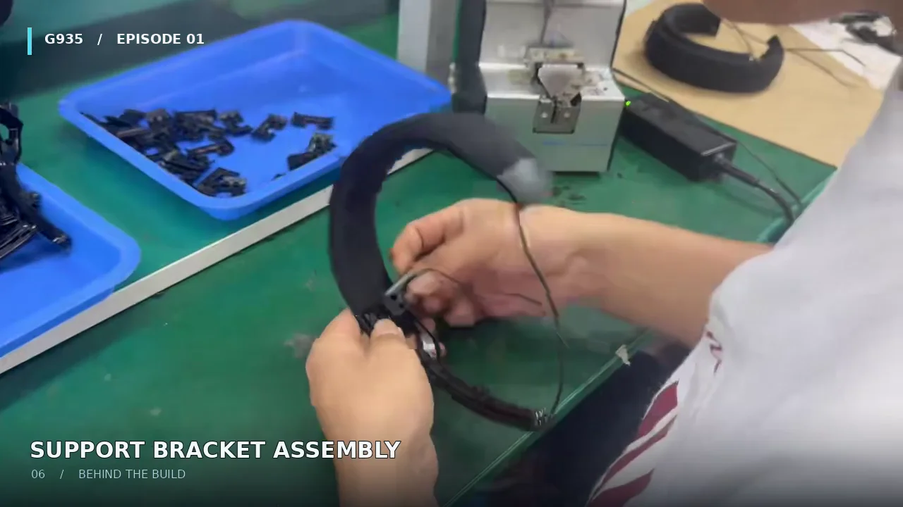
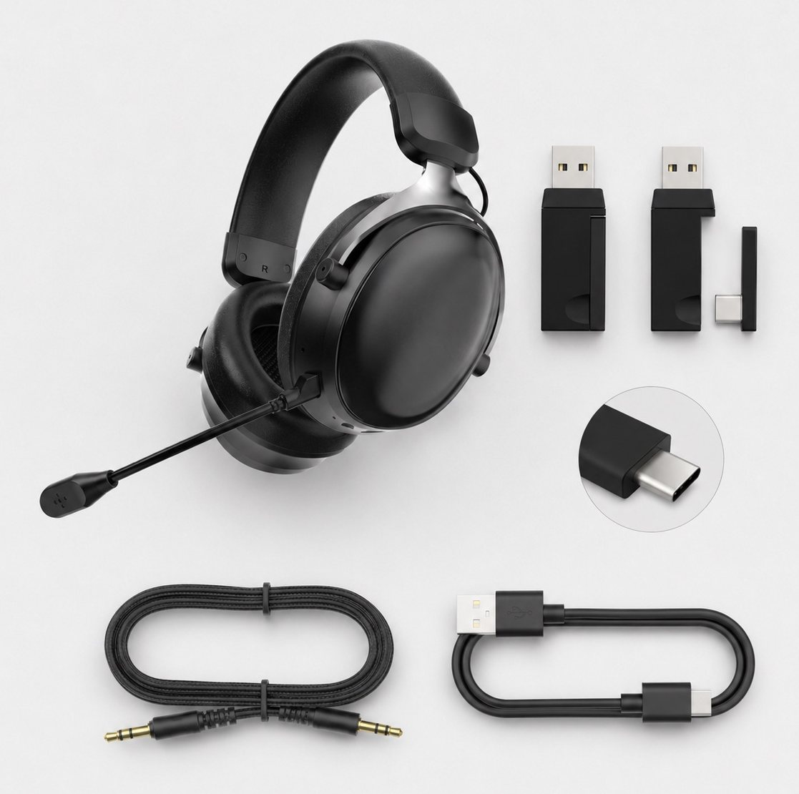
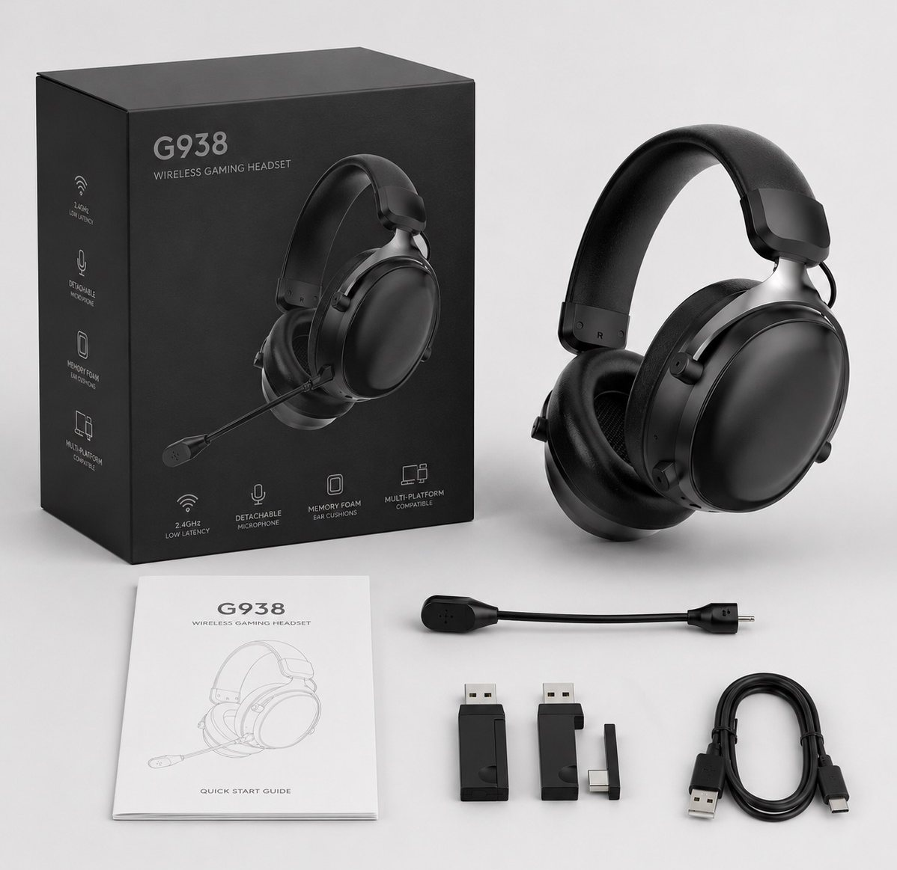

Headset assembly and packing
The supplied G935 video shows selected headband, bracket, earcup, finishing, handoff and packing stages. Confirm the wired or wireless version separately; it is not a complete manufacturing or inspection record.

Buyer supplier evaluation
Two suppliers send you similar-looking headsets. Both offer your logo on the earcup. How do you decide who to work with? Start with four questions: who is responsible for production, which version you are testing, what comes in the box and which documents cover it.
TALRIVO represents our own audio manufacturing business in China. Below, you can review selected G935 assembly footage, a G938 receiver setup video and a blank sample checklist. Each answers a different question; none replaces checking the exact headset you plan to order.

First-party review material
Different records answer different purchasing questions. An assembly video shows visible operations; a connection demo shows one sample setup; neither replaces your approved specification or required test reports.
The supplied G935 video shows selected headband, bracket, earcup, finishing, handoff and packing stages. Confirm the wired or wireless version separately; it is not a complete manufacturing or inspection record.

Review the separate G938 hands-on video for receiver insertion and controls. The photo here is an accessory reference. Completed Bluetooth pairing is not clearly visible in the video; confirm each target device on your sample.

Compare the receiver, adapters, cables, microphone, manuals and box with the agreed packing list. A photographed item is not automatically included in every order. Use the customization scope table to separate branding from functional changes.
Download the editable English sample review sheet to record device, mode, agreed criteria, observed result and unresolved changes. It is a blank buyer record, not a completed test report.
Before you choose a manufacturer
You do not need a long presentation to start. Ask for answers you can check, then keep them alongside the sample and agreed specification.
A useful first message: "We are looking for a gaming headset for [devices] in [market]. Can you show us the sample version, included accessories and documents to review before we choose?" You can send this as a short question without preparing a full RFQ.
Evaluation framework
The table below turns supplier review into a repeatable purchasing workflow. It avoids unsupported claims and keeps every decision tied to a sample or visible product record.
| Check | What to ask | Why it matters |
|---|---|---|
| Factory identity | Which company name, contact route and business document set will be used for the sample and quotation? | Keeps supplier identity traceable before sample, payment or contract discussion. |
| Factory evidence | Can the supplier provide current factory or workshop video, line images, process images or a live walkthrough for the headset route? | Separates visible process evidence from unsupported factory-size, capacity or certification claims. |
| Model identity | Which exact model code, connection version and color direction is being quoted? | Prevents comparing different versions as if they were the same headset. |
| Image evidence | Can the supplier show current headset, microphone, receiver, cable, accessory and packaging images? | Helps buyers verify visible facts before samples arrive. |
| Sample checks | What should be checked for sound, microphone, comfort, controls, connection and packaging? | Creates a record for approval or revision before bulk discussion. |
| Customization | Which logo, color, manual, packaging and accessory changes are available for this base model? | Separates confirmed product facts from project-specific branding work. |
| Documents | Which documents or labels need checking for the destination market and exact configuration? | Avoids assuming one universal document set for every product route. |
| RFQ package | What quantity range, sample timing, packaging direction and unresolved questions should be sent? | Makes the quotation request specific enough for a useful reply. |
Model evidence
Start from the Gaming Headset Model Code Index when a buyer has a code, then use the linked product pages as concrete evidence. The public figures below are model reference points for sample discussion, not a substitute for buyer-side sample approval.
G938 gives buyers a documented tri-mode path with JL7018M 2.4G chipset, 53mm driver, 20ms 2.4G latency reference, 1000mAh battery, detachable microphone, accessory images, packaging reference and published videos.
G941 supports 2.4G, Bluetooth and wired sample review with 50mm driver, 20ms 2.4G latency reference, 1000mAh battery, detachable boom microphone, receiver detail, official product video and microphone demonstration.
G936 fits buyers who want a lighter wireless direction with JL7018M 2.4G chipset, 40mm driver, 20ms 2.4G latency reference, 800mAh battery, fabric-cushion evidence, receiver, cable set and an ear-cushion material video.
G926 provides a 50mm RGB 2.4G wireless headset direction with receiver, microphone, accessory and packaging image references for buyers comparing visual style and sample configuration.
G940 supports shortlists that need a separate wireless gaming headset direction with detachable microphone and RGB styling.
G935 fits projects where a lighter 2.4G wireless sample path is relevant, with JL7018M 2.4G chipset, 40mm driver, 20ms 2.4G latency reference, 500mAh battery, detachable microphone, accessory image evidence and a published G935 video.
Supplier comparison
Before asking for a final quotation, make sure every shortlisted supplier answers the same questions. This keeps the comparison useful for importers, distributors and private-label buyers.
| Evidence area | Buyer question | Preferred proof before RFQ |
|---|---|---|
| Model specification | Which chipset, driver size, battery, connection route and microphone structure apply to this exact version? | Model page, specification sheet or written sample note tied to the selected code. |
| Sample version | Is the sample the same version that will be quoted later? | Sample label, packing note, current images, accessory set and clear revision record. |
| Connection route | Does the product use 2.4G receiver, Bluetooth, wired mode or a tri-mode setup? | Receiver image, cable list, pairing notes and target-device confirmation. |
| Microphone route | Is the microphone detachable, fixed, boom-style or built into the headset body? | Close-up images, video reference or sample-side voice-use notes. |
| Packaging scope | Which box, manual, labels, cable set and accessories are included in the sample discussion? | Flat-lay image, packing list and buyer-specific packaging notes. |
| Document questions | Which destination-market document or label questions still need checking? | Project-level document follow-up, not a broad unsupported certificate claim. |
Sample workflow
A supplier comparison is strongest when the buyer can trace how a model moved from page evidence to sample feedback and then to RFQ.
Capture model code, current images, receiver or cable direction, microphone structure, accessory list and source of each claim.
Review appearance, fit, controls, connection setup, voice use, accessories and packaging before approving a version.
Practical checks should cover boom position, keyboard noise, fan noise, mute behavior and voice naturalness during calls or games.
Match headset, microphone, receiver, cables, manual, box direction and labeling questions with the selected model.
Connect destination-market document questions to the exact headset configuration rather than a broad category claim.
Share model codes, target market, quantity range, sample result, branding scope, packaging direction and unresolved questions.
Connection decision
Connection claims are often misunderstood in supplier comparisons. Confirm what the headset actually includes and how the intended buyer will use it.
Related pages
FAQ
Start with factory identity evidence, model evidence, current product images, sample traceability, microphone and connection setup, packaging scope, destination-market document questions and a complete RFQ. Compare suppliers only after the quoted sample versions are comparable.
Ask for the legal company name used on documents, a current factory or workshop video or live walkthrough, clear production or sample-preparation responsibility, and model-level document scope. Treat factory size, capacity and certification claims as unconfirmed until documents or live evidence are verified.
No. Workshop photos can support questions about visible process areas, but capacity, certification, inspection scope and individual test results should be confirmed separately for the selected model and project.
Useful evidence includes model identity, current product images, receiver or cable direction, microphone structure, accessory list, packaging reference, specification source and clear notes on which claims still require sample confirmation.
Include target market, sales channel, model codes, connection direction, target devices, quantity range, sample timing, logo or packaging needs, accessory questions and destination-market document requirements.
Buyers can start with G938 for a refined tri-mode direction, G941 for a lead tri-mode model with videos, G936 for a lightweight fabric-cushion direction, G926 for a 50mm RGB wireless direction, G940 for another wireless sample path, and G935 for a clean wireless model with published video reference.
No. B2B quotations depend on selected model version, quantity range, branding, packaging, accessories, destination market, documents and sample plan.
Avoid relying on unsupported factory-size, capacity, certification, latency or price claims. Ask for current evidence, model-level documents and physical sample confirmation before approval.
Share your destination market, sales channel, model shortlist, connection direction, quantity range, sample timing, branding needs, packaging questions and required documents.